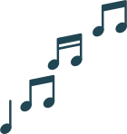

Met alle liefde repareert Ivan van de WeRepair shop in Nieuwland jouw elektronica, en als je een muziekinstrument bij je hebt dat gemaakt moet worden, komt er een grote lach op zijn gezicht!
Het maakt niet uit hoe oud je elektronica is. Ivan repareert met gemak 40 jaar oude elektrische piano’s of 20 jaar oude speakers!
Brazilië
Al 33 jaar woont Ivan in Nederland en dat is afgelopen november goed gevierd! Tijdens het grote feest werd er een open mic avond georganiseerd en was er een VoKu (volkskeuken), waar er (bijna) altijd veganistisch eten wordt geserveerd, ook goed voor de wereld!
Ik had het genoegen om op het feest aanwezig te zijn en met Ivan te mogen praten!
Zijn passie voor zijn eigen cultuur, maar ook de muziek en het samen zijn sprong eruit. Daarnaast vertelde hij mij dat hij zo veel mogelijk tweedehands spullen gebruikt om alles te repareren.
Kom elke dag langs!
Bij Ivan van WeRepair
In Nieuwland